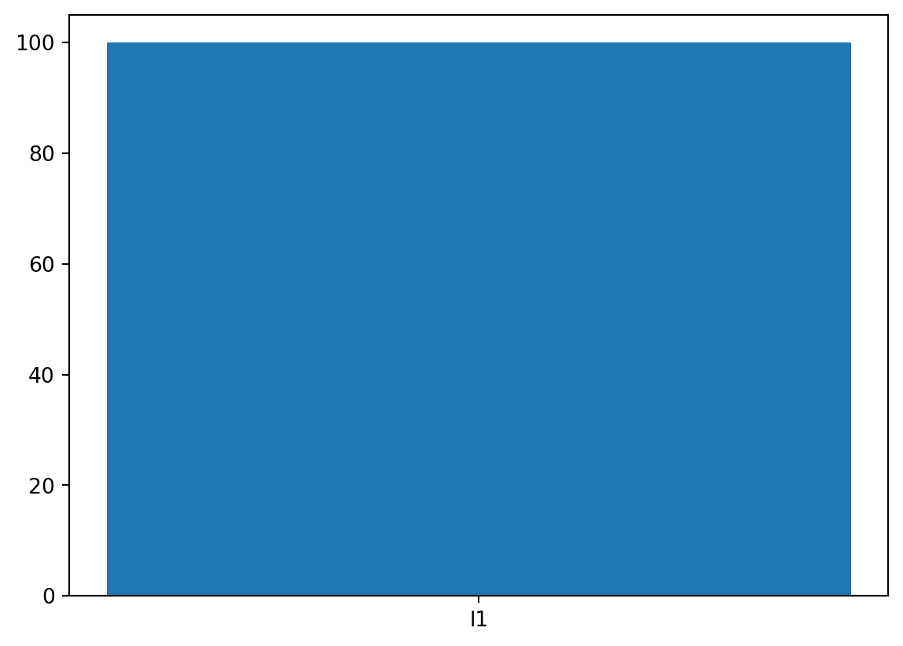
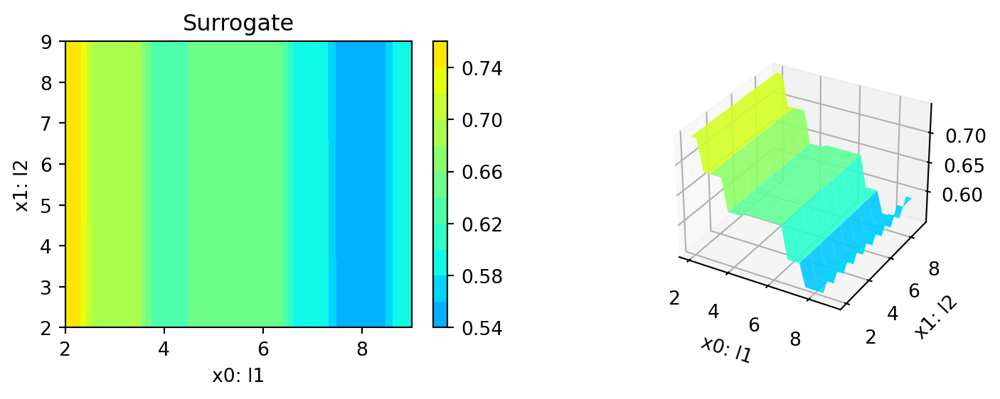
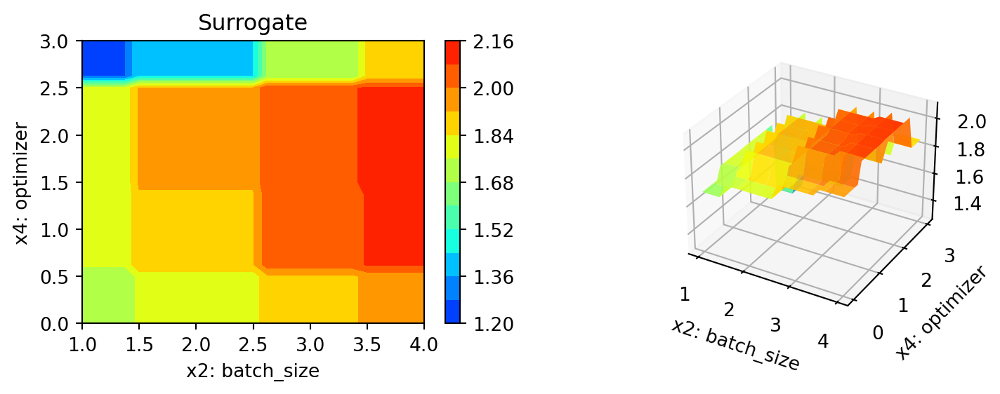
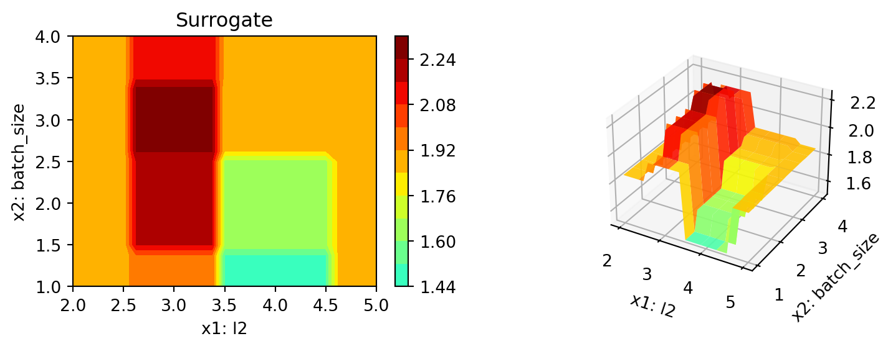
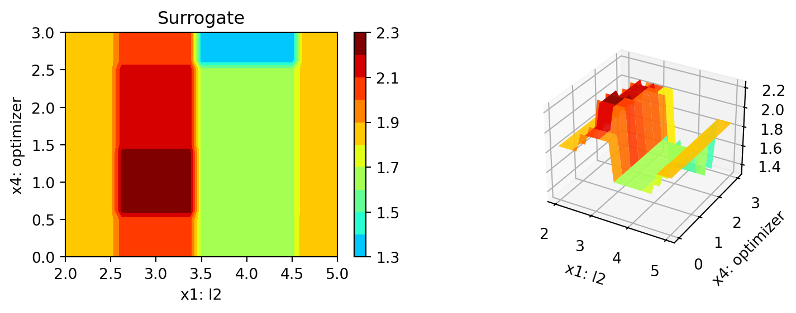
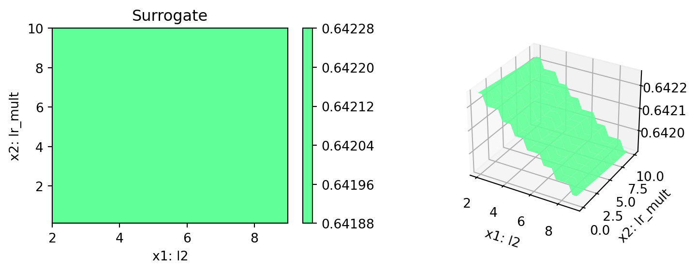

pip list | grep "spot[RiverPython]"spotPython 0.2.46
spotRiver 0.0.93Note: you may need to restart the kernel to use updated packages.In this tutorial, we will show how spotPython can be integrated into the PyTorch training workflow.
This document refers to the following software versions:
python: 3.10.10torch: 2.0.1torchvision: 0.15.0pip list | grep "spot[RiverPython]"spotPython 0.2.46
spotRiver 0.0.93Note: you may need to restart the kernel to use updated packages.spotPython can be installed via pip. Alternatively, the source code can be downloaded from gitHub: https://github.com/sequential-parameter-optimization/spotPython.
!pip install spotPythonspotPython from gitHub.# import sys
# !{sys.executable} -m pip install --upgrade build
# !{sys.executable} -m pip install --upgrade --force-reinstall spotPythonBefore we consider the detailed experimental setup, we select the parameters that affect run time, initial design size and the device that is used.
DEVICE."cpu" is preferred (on Mac)."cuda:0" instead.None, spotPython will automatically select the device.
"mps" on Macs, which is not the best choice for simple neural nets.MAX_TIME = 1
INIT_SIZE = 5
DEVICE = "cpu" # "cuda:0"from spotPython.utils.device import getDevice
DEVICE = getDevice(DEVICE)
print(DEVICE)cpuimport os
import copy
import socket
from datetime import datetime
from dateutil.tz import tzlocal
start_time = datetime.now(tzlocal())
HOSTNAME = socket.gethostname().split(".")[0]
experiment_name = '11-torch' + "_" + HOSTNAME + "_" + str(MAX_TIME) + "min_" + str(INIT_SIZE) + "init_" + str(start_time).split(".", 1)[0].replace(' ', '_')
experiment_name = experiment_name.replace(':', '-')
print(experiment_name)
if not os.path.exists('./figures'):
os.makedirs('./figures')11-torch_bartz09_1min_5init_2023-06-27_02-25-08fun_control DictionaryspotPython uses a Python dictionary for storing the information required for the hyperparameter tuning process, which was described in Section 14.2.
tensorboard_path to None if you are working under Windows.from spotPython.utils.init import fun_control_init
fun_control = fun_control_init(task="classification",
tensorboard_path="runs/11_spot_hpt_torch_fashion_mnist",
device=DEVICE)from torchvision import datasets, transforms
from torchvision.transforms import ToTensor
def load_data(data_dir="./data"):
# Download training data from open datasets.
training_data = datasets.FashionMNIST(
root=data_dir,
train=True,
download=True,
transform=ToTensor(),
)
# Download test data from open datasets.
test_data = datasets.FashionMNIST(
root=data_dir,
train=False,
download=True,
transform=ToTensor(),
)
return training_data, test_datatrain, test = load_data()
train.data.shape, test.data.shape(torch.Size([60000, 28, 28]), torch.Size([10000, 28, 28]))n_samples = len(train)
# add the dataset to the fun_control
fun_control.update({"data": None,
"train": train,
"test": test,
"n_samples": n_samples,
"target_column": None})After the training and test data are specified and added to the fun_control dictionary, spotPython allows the specification of a data preprocessing pipeline, e.g., for the scaling of the data or for the one-hot encoding of categorical variables, see Section 14.4. This feature is not used here, so we do not change the default value (which is None).
algorithm) and core_model_hyper_dictspotPython implements a class which is similar to the class described in the PyTorch tutorial. The class is called Net_fashionMNIST and is implemented in the file netfashionMNIST.py. The class is imported here.
from torch import nn
import spotPython.torch.netcore as netcore
class Net_fashionMNIST(netcore.Net_Core):
def __init__(self, l1, l2, lr_mult, batch_size, epochs, k_folds, patience, optimizer, sgd_momentum):
super(Net_fashionMNIST, self).__init__(
lr_mult=lr_mult,
batch_size=batch_size,
epochs=epochs,
k_folds=k_folds,
patience=patience,
optimizer=optimizer,
sgd_momentum=sgd_momentum,
)
self.flatten = nn.Flatten()
self.linear_relu_stack = nn.Sequential(
nn.Linear(28 * 28, l1),
nn.ReLU(),
nn.Linear(l1, l2),
nn.ReLU(),
nn.Linear(l2, 10)
)
def forward(self, x):
x = self.flatten(x)
logits = self.linear_relu_stack(x)
return logitsThis class inherits from the class Net_Core which is implemented in the file netcore.py, see Section 14.5.1.
from spotPython.data.torch_hyper_dict import TorchHyperDict
from spotPython.torch.netfashionMNIST import Net_fashionMNIST
from spotPython.hyperparameters.values import add_core_model_to_fun_control
fun_control = add_core_model_to_fun_control(core_model=Net_fashionMNIST,
fun_control=fun_control,
hyper_dict=TorchHyperDict,
filename=None)hyper_dict Hyperparameters for the Selected AlgorithmspotPython uses JSON files for the specification of the hyperparameters, which were described in Section 14.5.5.
The corresponding entries for the core_model class are shown below.
fun_control['core_model_hyper_dict']{'l1': {'type': 'int',
'default': 5,
'transform': 'transform_power_2_int',
'lower': 2,
'upper': 9},
'l2': {'type': 'int',
'default': 5,
'transform': 'transform_power_2_int',
'lower': 2,
'upper': 9},
'lr_mult': {'type': 'float',
'default': 1.0,
'transform': 'None',
'lower': 0.1,
'upper': 10.0},
'batch_size': {'type': 'int',
'default': 4,
'transform': 'transform_power_2_int',
'lower': 1,
'upper': 4},
'epochs': {'type': 'int',
'default': 3,
'transform': 'transform_power_2_int',
'lower': 3,
'upper': 4},
'k_folds': {'type': 'int',
'default': 1,
'transform': 'None',
'lower': 1,
'upper': 1},
'patience': {'type': 'int',
'default': 5,
'transform': 'None',
'lower': 2,
'upper': 10},
'optimizer': {'levels': ['Adadelta',
'Adagrad',
'Adam',
'AdamW',
'SparseAdam',
'Adamax',
'ASGD',
'NAdam',
'RAdam',
'RMSprop',
'Rprop',
'SGD'],
'type': 'factor',
'default': 'SGD',
'transform': 'None',
'core_model_parameter_type': 'str',
'lower': 0,
'upper': 12},
'sgd_momentum': {'type': 'float',
'default': 0.0,
'transform': 'None',
'lower': 0.0,
'upper': 1.0}}hyper_dict Hyperparameters for the Selected Algorithm aka core_modelspotPython provides functions for modifying the hyperparameters, their bounds and factors as well as for activating and de-activating hyperparameters without re-compilation of the Python source code. These functions were described in Section 14.6.
The hyperparameter k_folds is not used, it is de-activated here by setting the lower and upper bound to the same value.
l1 and l2 as well as epochs and patience are set to small values for demonstration purposes. These values are too small for a real application.fun_control = modify_hyper_parameter_bounds(fun_control, "l1", bounds=[2, 7])fun_control = modify_hyper_parameter_bounds(fun_control, "epochs", bounds=[7, 9]) andfun_control = modify_hyper_parameter_bounds(fun_control, "patience", bounds=[2, 7])from spotPython.hyperparameters.values import modify_hyper_parameter_bounds
fun_control = modify_hyper_parameter_bounds(fun_control, "k_folds", bounds=[0, 0])
fun_control = modify_hyper_parameter_bounds(fun_control, "patience", bounds=[2, 2])
fun_control = modify_hyper_parameter_bounds(fun_control, "epochs", bounds=[2, 3])
fun_control = modify_hyper_parameter_bounds(fun_control, "l1", bounds=[2, 5])
fun_control = modify_hyper_parameter_bounds(fun_control, "l2", bounds=[2, 5])from spotPython.hyperparameters.values import modify_hyper_parameter_levels
fun_control = modify_hyper_parameter_levels(fun_control, "optimizer",["Adam", "AdamW", "Adamax", "NAdam"])Optimizers are described in Section 14.6.1.
fun_control = modify_hyper_parameter_bounds(fun_control,
"lr_mult", bounds=[1e-3, 1e-3])
fun_control = modify_hyper_parameter_bounds(fun_control,
"sgd_momentum", bounds=[0.9, 0.9])The evaluation procedure requires the specification of two elements:
These are described in Section 19.7.1.
The key "loss_function" specifies the loss function which is used during the optimization, see Section 14.7.5.
We will use CrossEntropy loss for the multiclass-classification task.
from torch.nn import CrossEntropyLoss
loss_function = CrossEntropyLoss()
fun_control.update({
"loss_function": loss_function,
"shuffle": True,
"eval": "train_hold_out"
})from torchmetrics import Accuracy
metric_torch = Accuracy(task="multiclass", num_classes=10).to(fun_control["device"])
fun_control.update({"metric_torch": metric_torch})The following code passes the information about the parameter ranges and bounds to spot.
# extract the variable types, names, and bounds
from spotPython.hyperparameters.values import (get_bound_values,
get_var_name,
get_var_type,)
var_type = get_var_type(fun_control)
var_name = get_var_name(fun_control)
fun_control.update({"var_type": var_type,
"var_name": var_name})
lower = get_bound_values(fun_control, "lower")
upper = get_bound_values(fun_control, "upper")from spotPython.utils.eda import gen_design_table
print(gen_design_table(fun_control))| name | type | default | lower | upper | transform |
|--------------|--------|-----------|---------|---------|-----------------------|
| l1 | int | 5 | 2 | 5 | transform_power_2_int |
| l2 | int | 5 | 2 | 5 | transform_power_2_int |
| lr_mult | float | 1.0 | 0.001 | 0.001 | None |
| batch_size | int | 4 | 1 | 4 | transform_power_2_int |
| epochs | int | 3 | 2 | 3 | transform_power_2_int |
| k_folds | int | 1 | 0 | 0 | None |
| patience | int | 5 | 2 | 2 | None |
| optimizer | factor | SGD | 0 | 3 | None |
| sgd_momentum | float | 0.0 | 0.9 | 0.9 | None |fun_torchThe objective function fun_torch is selected next. It implements an interface from PyTorch’s training, validation, and testing methods to spotPython.
from spotPython.fun.hypertorch import HyperTorch
fun = HyperTorch().fun_torchimport numpy as np
from spotPython.spot import spot
from math import inf
spot_tuner = spot.Spot(fun=fun,
lower = lower,
upper = upper,
fun_evals = inf,
fun_repeats = 1,
max_time = MAX_TIME,
noise = False,
tolerance_x = np.sqrt(np.spacing(1)),
var_type = var_type,
var_name = var_name,
infill_criterion = "y",
n_points = 1,
seed=123,
log_level = 50,
show_models= False,
show_progress= True,
fun_control = fun_control,
design_control={"init_size": INIT_SIZE,
"repeats": 1},
surrogate_control={"noise": True,
"cod_type": "norm",
"min_theta": -4,
"max_theta": 3,
"n_theta": len(var_name),
"model_fun_evals": 10_000,
"log_level": 50
})
spot_tuner.run(X_start=X_start)
config: {'l1': 16, 'l2': 8, 'lr_mult': 0.001, 'batch_size': 16, 'epochs': 8, 'k_folds': 0, 'patience': 2, 'optimizer': 'AdamW', 'sgd_momentum': 0.9}
Epoch: 1 | MulticlassAccuracy: 0.1542083323001862 | Loss: 2.2913104605674746 | Acc: 0.1542083333333333.
Epoch: 2 | MulticlassAccuracy: 0.1704583317041397 | Loss: 2.2634323207537332 | Acc: 0.1704583333333333.
Epoch: 3 | MulticlassAccuracy: 0.1641666740179062 | Loss: 2.2373894081115724 | Acc: 0.1641666666666667.
Epoch: 4 | MulticlassAccuracy: 0.1618333309888840 | Loss: 2.2114091979662578 | Acc: 0.1618333333333333.
Epoch: 5 | MulticlassAccuracy: 0.1665000021457672 | Loss: 2.1865473899841308 | Acc: 0.1665000000000000.
Epoch: 6 | MulticlassAccuracy: 0.2017916738986969 | Loss: 2.1622974780400592 | Acc: 0.2017916666666667.
Epoch: 7 | MulticlassAccuracy: 0.2412083297967911 | Loss: 2.1383943106333416 | Acc: 0.2412083333333333.
Epoch: 8 | MulticlassAccuracy: 0.2635416686534882 | Loss: 2.1147876636981966 | Acc: 0.2635416666666667.
Returned to Spot: Validation loss: 2.1147876636981966
config: {'l1': 8, 'l2': 8, 'lr_mult': 0.001, 'batch_size': 8, 'epochs': 4, 'k_folds': 0, 'patience': 2, 'optimizer': 'Adamax', 'sgd_momentum': 0.9}
Epoch: 1 | MulticlassAccuracy: 0.1258333325386047 | Loss: 2.2952279709974923 | Acc: 0.1258333333333333.
Epoch: 2 | MulticlassAccuracy: 0.2468750029802322 | Loss: 2.2756265282630919 | Acc: 0.2468750000000000.
Epoch: 3 | MulticlassAccuracy: 0.2725000083446503 | Loss: 2.2603078028361003 | Acc: 0.2725000000000000.
Epoch: 4 | MulticlassAccuracy: 0.2800416648387909 | Loss: 2.2456721729834874 | Acc: 0.2800416666666667.
Returned to Spot: Validation loss: 2.2456721729834874
config: {'l1': 32, 'l2': 16, 'lr_mult': 0.001, 'batch_size': 2, 'epochs': 8, 'k_folds': 0, 'patience': 2, 'optimizer': 'NAdam', 'sgd_momentum': 0.9}
Epoch: 1 | MulticlassAccuracy: 0.4264166653156281 | Loss: 2.1686107113063335 | Acc: 0.4264166666666667.
Epoch: 2 | MulticlassAccuracy: 0.4610416591167450 | Loss: 1.9738836034138998 | Acc: 0.4610416666666667.
Epoch: 3 | MulticlassAccuracy: 0.5292916893959045 | Loss: 1.7179450512031713 | Acc: 0.5292916666666667.
Epoch: 4 | MulticlassAccuracy: 0.5415416955947876 | Loss: 1.4686862741361062 | Acc: 0.5415416666666667.
Epoch: 5 | MulticlassAccuracy: 0.5519166588783264 | Loss: 1.2712535235707958 | Acc: 0.5519166666666667.
Epoch: 6 | MulticlassAccuracy: 0.5776666402816772 | Loss: 1.1309863107278944 | Acc: 0.5776666666666667.
Epoch: 7 | MulticlassAccuracy: 0.6192916631698608 | Loss: 1.0324780440398802 | Acc: 0.6192916666666667.
Epoch: 8 | MulticlassAccuracy: 0.6474583148956299 | Loss: 0.9611213178721567 | Acc: 0.6474583333333334.
Returned to Spot: Validation loss: 0.9611213178721567
config: {'l1': 4, 'l2': 8, 'lr_mult': 0.001, 'batch_size': 4, 'epochs': 4, 'k_folds': 0, 'patience': 2, 'optimizer': 'AdamW', 'sgd_momentum': 0.9}
Epoch: 1 | MulticlassAccuracy: 0.1599166691303253 | Loss: 2.3060672928094865 | Acc: 0.1599166666666667.
Epoch: 2 | MulticlassAccuracy: 0.1980416625738144 | Loss: 2.2935860640406607 | Acc: 0.1980416666666667.
Epoch: 3 | MulticlassAccuracy: 0.1897916644811630 | Loss: 2.2734777836998306 | Acc: 0.1897916666666667.
Epoch: 4 | MulticlassAccuracy: 0.1635416597127914 | Loss: 2.2505328555901847 | Acc: 0.1635416666666667.
Returned to Spot: Validation loss: 2.2505328555901847
config: {'l1': 16, 'l2': 32, 'lr_mult': 0.001, 'batch_size': 8, 'epochs': 8, 'k_folds': 0, 'patience': 2, 'optimizer': 'Adam', 'sgd_momentum': 0.9}
Epoch: 1 | MulticlassAccuracy: 0.1548749953508377 | Loss: 2.2728014570077262 | Acc: 0.1548750000000000.
Epoch: 2 | MulticlassAccuracy: 0.2449166625738144 | Loss: 2.2354527950286864 | Acc: 0.2449166666666667.
Epoch: 3 | MulticlassAccuracy: 0.3000416755676270 | Loss: 2.1984618102709454 | Acc: 0.3000416666666667.
Epoch: 4 | MulticlassAccuracy: 0.3459999859333038 | Loss: 2.1608177810112634 | Acc: 0.3460000000000000.
Epoch: 5 | MulticlassAccuracy: 0.3714583218097687 | Loss: 2.1216574647029240 | Acc: 0.3714583333333333.
Epoch: 6 | MulticlassAccuracy: 0.3842916786670685 | Loss: 2.0792922325531640 | Acc: 0.3842916666666666.
Epoch: 7 | MulticlassAccuracy: 0.3983750045299530 | Loss: 2.0340265440543495 | Acc: 0.3983750000000000.
Epoch: 8 | MulticlassAccuracy: 0.4089166522026062 | Loss: 1.9865678440332413 | Acc: 0.4089166666666667.
Returned to Spot: Validation loss: 1.9865678440332413
config: {'l1': 8, 'l2': 16, 'lr_mult': 0.001, 'batch_size': 8, 'epochs': 8, 'k_folds': 0, 'patience': 2, 'optimizer': 'NAdam', 'sgd_momentum': 0.9}
Epoch: 1 | MulticlassAccuracy: 0.1003749966621399 | Loss: 2.2697903744379677 | Acc: 0.1003750000000000.
Epoch: 2 | MulticlassAccuracy: 0.1274583339691162 | Loss: 2.2259037174781162 | Acc: 0.1274583333333333.
Epoch: 3 | MulticlassAccuracy: 0.2216250002384186 | Loss: 2.1782967908382416 | Acc: 0.2216250000000000.
Epoch: 4 | MulticlassAccuracy: 0.2731666564941406 | Loss: 2.1271203188498813 | Acc: 0.2731666666666667.
Epoch: 5 | MulticlassAccuracy: 0.3138333261013031 | Loss: 2.0763889294862747 | Acc: 0.3138333333333334.
Epoch: 6 | MulticlassAccuracy: 0.3635833263397217 | Loss: 2.0271328648726143 | Acc: 0.3635833333333333.
Epoch: 7 | MulticlassAccuracy: 0.3864166736602783 | Loss: 1.9781127833525340 | Acc: 0.3864166666666667.
Epoch: 8 | MulticlassAccuracy: 0.4022916555404663 | Loss: 1.9280990570783616 | Acc: 0.4022916666666667.
Returned to Spot: Validation loss: 1.9280990570783616
spotPython tuning: 0.9611213178721567 [####------] 42.86%
config: {'l1': 16, 'l2': 16, 'lr_mult': 0.001, 'batch_size': 2, 'epochs': 4, 'k_folds': 0, 'patience': 2, 'optimizer': 'AdamW', 'sgd_momentum': 0.9}
Epoch: 1 | MulticlassAccuracy: 0.2355833351612091 | Loss: 2.2081389956275621 | Acc: 0.2355833333333333.
Epoch: 2 | MulticlassAccuracy: 0.3877083361148834 | Loss: 2.1123105195860070 | Acc: 0.3877083333333333.
Epoch: 3 | MulticlassAccuracy: 0.4113333225250244 | Loss: 2.0070645092030368 | Acc: 0.4113333333333333.
Epoch: 4 | MulticlassAccuracy: 0.3880000114440918 | Loss: 1.9030423973202706 | Acc: 0.3880000000000000.
Returned to Spot: Validation loss: 1.9030423973202706
spotPython tuning: 0.9611213178721567 [##########] 95.36%
config: {'l1': 16, 'l2': 32, 'lr_mult': 0.001, 'batch_size': 8, 'epochs': 8, 'k_folds': 0, 'patience': 2, 'optimizer': 'AdamW', 'sgd_momentum': 0.9}
Epoch: 1 | MulticlassAccuracy: 0.1010833308100700 | Loss: 2.2711552331447602 | Acc: 0.1010833333333333.
Epoch: 2 | MulticlassAccuracy: 0.1329166740179062 | Loss: 2.2379770609537761 | Acc: 0.1329166666666667.
Epoch: 3 | MulticlassAccuracy: 0.2425833344459534 | Loss: 2.2045227307478585 | Acc: 0.2425833333333333.
Epoch: 4 | MulticlassAccuracy: 0.3305000066757202 | Loss: 2.1688469374179840 | Acc: 0.3305000000000000.
Epoch: 5 | MulticlassAccuracy: 0.3759583234786987 | Loss: 2.1304867175817490 | Acc: 0.3759583333333333.
Epoch: 6 | MulticlassAccuracy: 0.3908333480358124 | Loss: 2.0891530567010244 | Acc: 0.3908333333333333.
Epoch: 7 | MulticlassAccuracy: 0.4142083227634430 | Loss: 2.0454490068356197 | Acc: 0.4142083333333333.
Epoch: 8 | MulticlassAccuracy: 0.4440000057220459 | Loss: 1.9994953071276347 | Acc: 0.4440000000000000.
Returned to Spot: Validation loss: 1.9994953071276347spotPython tuning: 0.9611213178721567 [##########] 100.00% Done...
<spotPython.spot.spot.Spot at 0x12693a8f0>The textual output shown in the console (or code cell) can be visualized with Tensorboard as described in Section 14.9, see also the description in the documentation: Tensorboard.
After the hyperparameter tuning run is finished, the results can be analyzed as described in Section 14.10.
SAVE = False
LOAD = False
if SAVE:
result_file_name = "res_" + experiment_name + ".pkl"
with open(result_file_name, 'wb') as f:
pickle.dump(spot_tuner, f)
if LOAD:
result_file_name = "ADD THE NAME here, e.g.: res_ch10-friedman-hpt-0_maans03_60min_20init_1K_2023-04-14_10-11-19.pkl"
with open(result_file_name, 'rb') as f:
spot_tuner = pickle.load(f)After the hyperparameter tuning run is finished, the progress of the hyperparameter tuning can be visualized. The following code generates the progress plot from ?fig-progress.
spot_tuner.plot_progress(log_y=False,
filename="./figures/" + experiment_name+"_progress.png")
print(gen_design_table(fun_control=fun_control,
spot=spot_tuner))| name | type | default | lower | upper | tuned | transform | importance | stars |
|--------------|--------|-----------|---------|---------|---------|-----------------------|--------------|---------|
| l1 | int | 5 | 2.0 | 5.0 | 5.0 | transform_power_2_int | 100.00 | *** |
| l2 | int | 5 | 2.0 | 5.0 | 4.0 | transform_power_2_int | 0.27 | . |
| lr_mult | float | 1.0 | 0.001 | 0.001 | 0.001 | None | 0.00 | |
| batch_size | int | 4 | 1.0 | 4.0 | 1.0 | transform_power_2_int | 2.78 | * |
| epochs | int | 3 | 2.0 | 3.0 | 3.0 | transform_power_2_int | 0.00 | |
| k_folds | int | 1 | 0.0 | 0.0 | 0.0 | None | 0.00 | |
| patience | int | 5 | 2.0 | 2.0 | 2.0 | None | 0.00 | |
| optimizer | factor | SGD | 0.0 | 3.0 | 3.0 | None | 0.24 | . |
| sgd_momentum | float | 0.0 | 0.9 | 0.9 | 0.9 | None | 0.00 | |spot_tuner.plot_importance(threshold=0.025, filename="./figures/" + experiment_name+"_importance.png")
The architecture of the spotPython model can be obtained by the following code:
from spotPython.hyperparameters.values import get_one_core_model_from_X
X = spot_tuner.to_all_dim(spot_tuner.min_X.reshape(1,-1))
model_spot = get_one_core_model_from_X(X, fun_control)
model_spotNet_fashionMNIST(
(flatten): Flatten(start_dim=1, end_dim=-1)
(linear_relu_stack): Sequential(
(0): Linear(in_features=784, out_features=32, bias=True)
(1): ReLU()
(2): Linear(in_features=32, out_features=16, bias=True)
(3): ReLU()
(4): Linear(in_features=16, out_features=10, bias=True)
)
)fc = fun_control
fc.update({"core_model_hyper_dict":
hyper_dict[fun_control["core_model"].__name__]})
model_default = get_one_core_model_from_X(X_start, fun_control=fc)
model_defaultNet_fashionMNIST(
(flatten): Flatten(start_dim=1, end_dim=-1)
(linear_relu_stack): Sequential(
(0): Linear(in_features=784, out_features=32, bias=True)
(1): ReLU()
(2): Linear(in_features=32, out_features=32, bias=True)
(3): ReLU()
(4): Linear(in_features=32, out_features=10, bias=True)
)
)The method train_tuned takes a model architecture without trained weights and trains this model with the train data. The train data is split into train and validation data. The validation data is used for early stopping. The trained model weights are saved as a dictionary.
from spotPython.torch.traintest import train_tuned
train_tuned(net=model_default, train_dataset=train, shuffle=True,
loss_function=fun_control["loss_function"],
metric=fun_control["metric_torch"],
device = fun_control["device"],
show_batch_interval=1_000_000,
path=None,
task=fun_control["task"])Epoch: 1 | MulticlassAccuracy: 0.3307499885559082 | Loss: 2.0130793124039967 | Acc: 0.3307500000000000.
Epoch: 2 | MulticlassAccuracy: 0.5594999790191650 | Loss: 1.5651059040228525 | Acc: 0.5595000000000000.
Epoch: 3 | MulticlassAccuracy: 0.5910416841506958 | Loss: 1.2618489154577255 | Acc: 0.5910416666666667.
Epoch: 4 | MulticlassAccuracy: 0.6205000281333923 | Loss: 1.0944909700155259 | Acc: 0.6205000000000001.
Epoch: 5 | MulticlassAccuracy: 0.6485833525657654 | Loss: 0.9901934104760488 | Acc: 0.6485833333333333.
Epoch: 6 | MulticlassAccuracy: 0.6653749942779541 | Loss: 0.9229930616815885 | Acc: 0.6653750000000000.
Epoch: 7 | MulticlassAccuracy: 0.6782500147819519 | Loss: 0.8752298344373703 | Acc: 0.6782500000000000.
Epoch: 8 | MulticlassAccuracy: 0.6864583492279053 | Loss: 0.8400051560600599 | Acc: 0.6864583333333333.
Returned to Spot: Validation loss: 0.8400051560600599from spotPython.torch.traintest import test_tuned
test_tuned(net=model_default, test_dataset=test,
loss_function=fun_control["loss_function"],
metric=fun_control["metric_torch"],
shuffle=False,
device = fun_control["device"],
task=fun_control["task"])MulticlassAccuracy: 0.6764000058174133 | Loss: 0.8531206859111786 | Acc: 0.6764000000000000.
Final evaluation: Validation loss: 0.8531206859111786
Final evaluation: Validation metric: 0.6764000058174133
----------------------------------------------(0.8531206859111786, nan, tensor(0.6764))The following code trains the model model_spot. If path is set to a filename, e.g., path = "model_spot_trained.pt", the weights of the trained model will be saved to this file.
train_tuned(net=model_spot, train_dataset=train,
loss_function=fun_control["loss_function"],
metric=fun_control["metric_torch"],
shuffle=True,
device = fun_control["device"],
path=None,
task=fun_control["task"])Epoch: 1 | Batch: 10000. Batch Size: 2. Training Loss (running): 2.262MulticlassAccuracy: 0.3348749876022339 | Loss: 2.1192374480764071 | Acc: 0.3348750000000000.
Epoch: 2 | Batch: 10000. Batch Size: 2. Training Loss (running): 2.048MulticlassAccuracy: 0.4183333218097687 | Loss: 1.8694786401689052 | Acc: 0.4183333333333333.
Epoch: 3 | Batch: 10000. Batch Size: 2. Training Loss (running): 1.794MulticlassAccuracy: 0.4394166767597198 | Loss: 1.6239626869509618 | Acc: 0.4394166666666667.
Epoch: 4 | Batch: 10000. Batch Size: 2. Training Loss (running): 1.560MulticlassAccuracy: 0.4784166812896729 | Loss: 1.4206250766466062 | Acc: 0.4784166666666667.
Epoch: 5 | Batch: 10000. Batch Size: 2. Training Loss (running): 1.366MulticlassAccuracy: 0.5855416655540466 | Loss: 1.2543668860817949 | Acc: 0.5855416666666666.
Epoch: 6 | Batch: 10000. Batch Size: 2. Training Loss (running): 1.210MulticlassAccuracy: 0.6311666369438171 | Loss: 1.1229807606401543 | Acc: 0.6311666666666667.
Epoch: 7 | Batch: 10000. Batch Size: 2. Training Loss (running): 1.096MulticlassAccuracy: 0.6466249823570251 | Loss: 1.0280382718599090 | Acc: 0.6466250000000000.
Epoch: 8 | Batch: 10000. Batch Size: 2. Training Loss (running): 1.011MulticlassAccuracy: 0.6549999713897705 | Loss: 0.9593028057388341 | Acc: 0.6550000000000000.
Returned to Spot: Validation loss: 0.9593028057388341test_tuned(net=model_spot, test_dataset=test,
shuffle=False,
loss_function=fun_control["loss_function"],
metric=fun_control["metric_torch"],
device = fun_control["device"],
task=fun_control["task"])MulticlassAccuracy: 0.6488000154495239 | Loss: 0.9703819202840328 | Acc: 0.6488000000000000.
Final evaluation: Validation loss: 0.9703819202840328
Final evaluation: Validation metric: 0.6488000154495239
----------------------------------------------(0.9703819202840328, nan, tensor(0.6488))filename = "./figures/" + experiment_name
spot_tuner.plot_important_hyperparameter_contour(filename=filename)l1: 100.00000000000001
l2: 0.27405687245342264
batch_size: 2.782547626620523
optimizer: 0.2354071447482463





spot_tuner.parallel_plot()Parallel coordinates plots
PLOT_ALL = False
if PLOT_ALL:
n = spot_tuner.k
for i in range(n-1):
for j in range(i+1, n):
spot_tuner.plot_contour(i=i, j=j, min_z=min_z, max_z = max_z)